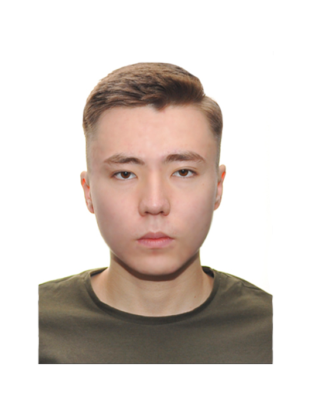

|

|
Nurali OryngaliyevBeginner specialist |
|---|
ABOUT ME |
SKILLS |
|---|---|
| I am student at Astana IT University
studying cybersecurity with knowledge of various programming languages. |
|
CONTACTS |
WORK EXPERIENCE |
EDUCATIONAstana IT University, 2020-2023 Nazarbayev Intellectual Schools, 2014-2020 |
Cyberspace "SKLAD" Nur-Sultan, PC manager
March 2021 - Today
Business Organization Center "BusinessROST" NurSultan, courier January 2021 - March 2021
|
|
Center for military tactical games "Arena" Karaganda, administrator-trainer
August 2018 - December 2020
|
In pursuit of a quality education, in the 7th grade I entered the Nazarbayev Intellectual School and in the same class met my favorite teacher, a teacher of computer science. This is the same person who unleashed in me the enthusiasm for learning computer science and programming languages. Starting from the 9th grade, I began to participate in competitions in robotics at city, regional, republican and even international levels, won prizes, presented design work. Since ICT was given to me with ease, I decided to enter a specialty in the same area. The best option for me was the newly opened university, located at the epicenter of the AITU IT infrastructure. I am currently in my first year in Cybersecurity. From early childhood I was interested in computers. When I visited relatives at home who have him, then I could not be torn away from him at all. At first, I played old games like Snowballs and Solitaire on them. With the same zeal, I explored other computer capabilities available to the user. The adventures in the world of computing technology did not end there. When I was 7 years old, my parents bought a computer for the house. Seeing with what interest I was sitting behind him, dad casually said that I would become a great programmer and laughed. After a while, my mother gave me a book about the basics of working at a computer and its functionality, which I read very quickly, while simultaneously applying theory in practice. Around the same time, I learned that all software is made by people in Java, and interest in this area has become more and more every time. Concluding all of the above, I want to say that the attraction to something curbed in childhood shows what a person really wants to do in the future. I am confident in my choice.